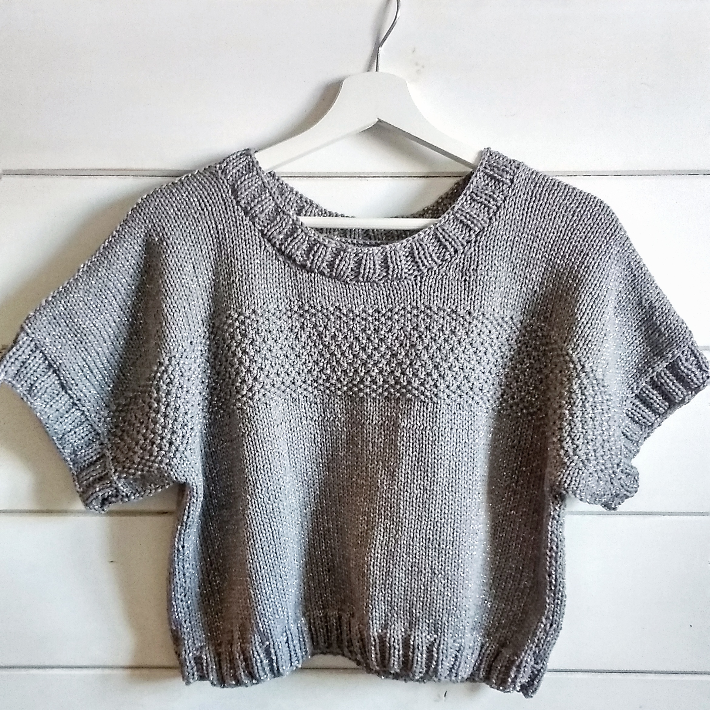

Top Genki, reto mayo casasol y nueva página en ravelry
¿Has oído hablar de los retos mensuales que organiza la casa de hilos Casasol?
Nosotras supimos de la existencia de estos retos hace pocos meses, y dado que tenían muy buena pinta, Isa decidió apuntarse al reto de mayo. En este post, vamos a contarte en qué consiste y cómo hemos vivido la experiencia, creemos que no varía mucho de mes a mes, pero vamos a contarte el reto de mayo que es el que conocemos :D.
A principios de mes, Casasol presenta un nuevo hilo, en mayo fue el hilo Mako un algodón egipcio procesado en Japón con unas fibras metalizadas. Entonces, invita a diseñadoras noveles a diseñar una prenda o complemento con ese hilo (ganchillo o dos agujas) y a tener preparado el patrón y fotos de promoción a finales de mes. Además, el reto es amadrinado por una diseñadora reconocida, en mayo fue Santa Pazienzia.
El premio de que tu diseño resulte el elegido son 120 € si eres autónoma o una cesta con materiales Casasol por ese valor en caso de que no y la venta de un kit con tu patrón en la página de Santa Pazienzia (llevándote 5€ por kit vendido). Además de esto, creo que la promoción que te da que tu patrón sea vendido en una página de una diseñadora reconocida es, sin duda, lo más interesante.

Durante el mes de mayo, todas las participantes van compartiendo sus progresos en Instagram bajo el hashtag #diseñadoracasasol. Lo mejor del reto ha sido ir avanzando en mi diseño en comunidad junto con el resto de participantes. También ha habido momentos estresantes, porque al final entre que te llegan los hilos y el tiempo invertido en diseño y muestras, no queda tanto tiempo para tejer y ¡escribir el patrón! Aunque no es la primera vez que diseño una prenda, sí era la primera vez que escribía un patrón y quería que estuviera lo mejor posible. Pero cuando ves que el resultado es justo como te lo estabas imaginando en la cabeza, todo cobra sentido y merece la pena.
 El diseño que presenté al reto de mayo ha sido el Top Genki, un crop-top con mucha holgura que recuerda a sudaderas de tipo deportivo oversized. Pensando en la estética deportiva desde el principio quería que llevara una franja que cruzara el ancho, pero no quería hacerla en otro color, si no dándole la textura con el punto. Probé diferentes maneras de conseguir esto haciendo muestras cuando me llegó el hilo. Finalmente, el acabado que más me convenció fue hacer la base en punto jersey y la franja con una combinación de punto arroz y punto arroz doble. Intenté planear casi todo el patrón antes de ponerme a tejer, porque sabía que con tan poco tiempo la planificación era fundamental y una inversión al principio me iba a ahorrar muchos quebraderos de cabeza en el futuro. El resultado del diseño me encanta, aunque la construcción es muy simple, se acopla al cuerpo de maravilla y el top tiene justo el rollo que estaba buscando.
El diseño que presenté al reto de mayo ha sido el Top Genki, un crop-top con mucha holgura que recuerda a sudaderas de tipo deportivo oversized. Pensando en la estética deportiva desde el principio quería que llevara una franja que cruzara el ancho, pero no quería hacerla en otro color, si no dándole la textura con el punto. Probé diferentes maneras de conseguir esto haciendo muestras cuando me llegó el hilo. Finalmente, el acabado que más me convenció fue hacer la base en punto jersey y la franja con una combinación de punto arroz y punto arroz doble. Intenté planear casi todo el patrón antes de ponerme a tejer, porque sabía que con tan poco tiempo la planificación era fundamental y una inversión al principio me iba a ahorrar muchos quebraderos de cabeza en el futuro. El resultado del diseño me encanta, aunque la construcción es muy simple, se acopla al cuerpo de maravilla y el top tiene justo el rollo que estaba buscando.
Aprovechamos que queremos compartir el patrón con vosotras para anunciaros que ¡estrenamos página de ravelry! El pdf del patrón te lo puedes descargar gratuitamente desde nuestra página de ravelry, ¡estaremos encantadas de que lo tejas! y de ver tus creaciones utilizando los hashtags #topGenki y #vidaypunto
P.D. : Raquel fue una ayuda fundamental en todas las etapas del proceso y ahora está siendo la segunda persona del mundo en tejerlo <3 . Síguenos en instagram para no perderte nada.